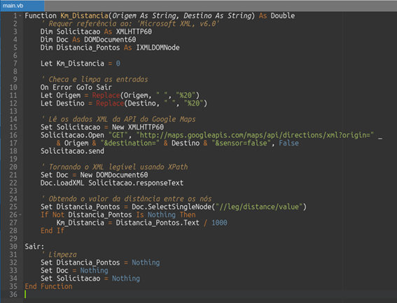
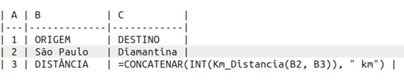

Cálculo de LogÃstica com VBA
Automatização aplicada a LogÃstica com VBA
Automatizar um processo repetitivo em VBA (Visual Basic for Applications) significa criar um conjunto de instruções ou rotinas de código que executam automaticamente tarefas especÃficas em uma planilha do Excel. Essas tarefas podem incluir formatação, cálculos, preenchimento de dados, criação de gráficos e muito mais. A automação permite que você reduza o trabalho manual, economize tempo e minimize erros, tornando o processo mais eficiente e produtivo. Basicamente, você está ensinando o Excel a executar ações especÃficas sem a necessidade de intervenção manual constante.
A automatização de tarefas no Excel utilizando VBA (Visual Basic for Applications) é uma excelente maneira de aumentar a produtividade e eliminar tarefas repetitivas.
Fundamentos para explorar macros e VBA no Excel:
-
O que é VBA e como funciona no Excel?
- O VBA é a linguagem de programação por trás de todo o funcionamento do Excel. Ele permite executar funções e fórmulas, desde as básicas (como SOMA e MÉDIA) até as mais complexas que editam e formatam células.
- Com o VBA, você pode automatizar tarefas como formatação, preenchimento de valores, criação de gráficos e importação de dados externos.
-
BenefÃcios de utilizar macros e VBA no Excel:
- Economia de tempo: Ao automatizar tarefas manuais e repetitivas.
- Aumento da produtividade: Focando em tarefas que exigem raciocÃnio em vez de operação.
- Maior consistência: Reduzindo erros humanos.
- Reutilização das macros: Proporcionando eficiência a longo prazo.
-
Gravando sua primeira macro no Excel:
- Abra uma nova planilha no Excel.
- Clique na aba Desenvolvedor.
- Selecione Gravar Macro e dê um nome à sua macro.
- Todas as ações realizadas na planilha serão gravadas como uma macro.
-
Exemplos de tarefas que podem ser automatizadas:
- Formatação de células.
- Preenchimento de valores.
- Criação de gráficos.
- Importação de dados externos.
Vantagens econômicas da automação com VBA em logÃstica
-
Redução de Custos Operacionais:
- A automação elimina a necessidade de realizar manualmente tarefas repetitivas, economizando tempo e recursos humanos.
- Menos horas de trabalho significam menor custo operacional a longo prazo.
-
Aumento da Produtividade:
- Com macros e VBA, você pode executar várias etapas de cálculos logÃsticos com apenas um clique.
- Isso permite que os funcionários se concentrem em tarefas mais complexas e estratégicas.
-
Minimização de Erros:
- Tarefas manuais estão sujeitas a erros humanos, como digitação incorreta ou esquecimento.
- A automação reduz esses erros, melhorando a precisão dos cálculos logÃsticos.
-
Agilidade nas Atualizações:
- Se houver mudanças nos cálculos ou nas fórmulas, você pode atualizar a macro VBA em vez de revisar manualmente cada célula na planilha.
- Isso economiza tempo e garante que todas as alterações sejam aplicadas consistentemente.
-
Flexibilidade e Escalabilidade:
- Macros VBA podem ser adaptadas para diferentes cenários logÃsticos.
- À medida que sua planilha cresce ou novas necessidades surgem, a automação pode ser facilmente ajustada.
-
Tempo de Resposta Mais Rápido:
- Com a automação, você pode gerar relatórios e análises logÃsticas rapidamente.
- Isso é especialmente útil para tomadas de decisão ágeis.
A automação com VBA no Excel oferece eficiência, precisão e economia de tempo, o que pode resultar em vantagens econômicas significativas para sua rotina de cálculos logÃsticos.
Exemplo prático: cálculo de distância logÃstica com VBA
Vamos criar um código VBA para calcular a menor distância em quilômetros entre dois pontos na cidade. Para isso, utilizaremos a API do Google Maps para obter informações sobre as rotas e distâncias.
Aqui está um exemplo de função VBA que você pode incorporar ao Excel para calcular a distância entre dois locais:
VBA

Para usar essa função, siga os passos abaixo:
- Verifique se a guia "Desenvolvedor" está habilitada no Excel.
- Acesse o Visual Basic na guia "Desenvolvedor".
- Crie um módulo para incluir o código.
- Insira o código acima no módulo.
- Habilite a biblioteca "Microsoft XML, v6.0" nas referências.
Exemplo de uso da função Km_Distancia:

Planilha Excel
Lembre-se de digitar os nomes das cidades sem acentos ou caracteres especiais.
Em resumo, a automação com VBA no Excel oferece eficiência, precisão e economia de tempo, o que pode resultar em vantagens econômicas significativas para sua rotina de cálculos logÃsticos.